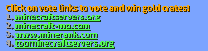

新規勢
EarthMCとはなにか
EarthMCとは地球再現サーバーで国とか街を作ることができます。EarthMCは地球を500分の1サイズに縮小させたワールドです。ルール に違反するとBANされます。EarthMCでは金インゴットがお金の役割をしていて金インゴットを使用してアイテムを買ったり逆に販売して金インゴットを稼ぐこともできます24時間に1回voteをすることができvoteでお金を稼ぐことができます。チャット欄に/voteを入力することで4個のリンクが表示されます

その4個のリンクを押してサイトに移動しますそしてCAPTCHAをクリアしvoteボタンを押すことでGoldCrate（ゴールドクレート）が手に入りますそれを使用することでルーレットみたいなのが始まりランダムで手に入る金の数が変わります平均5個